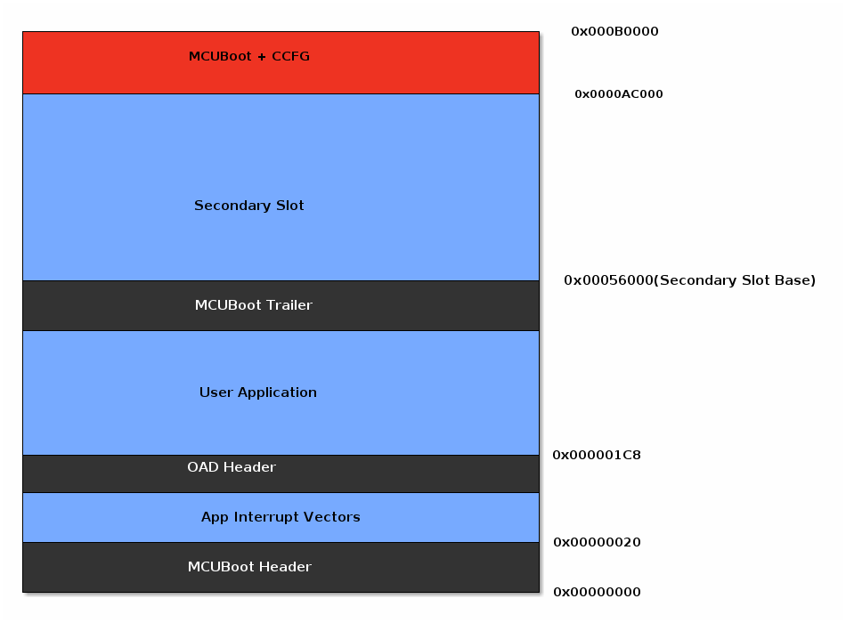
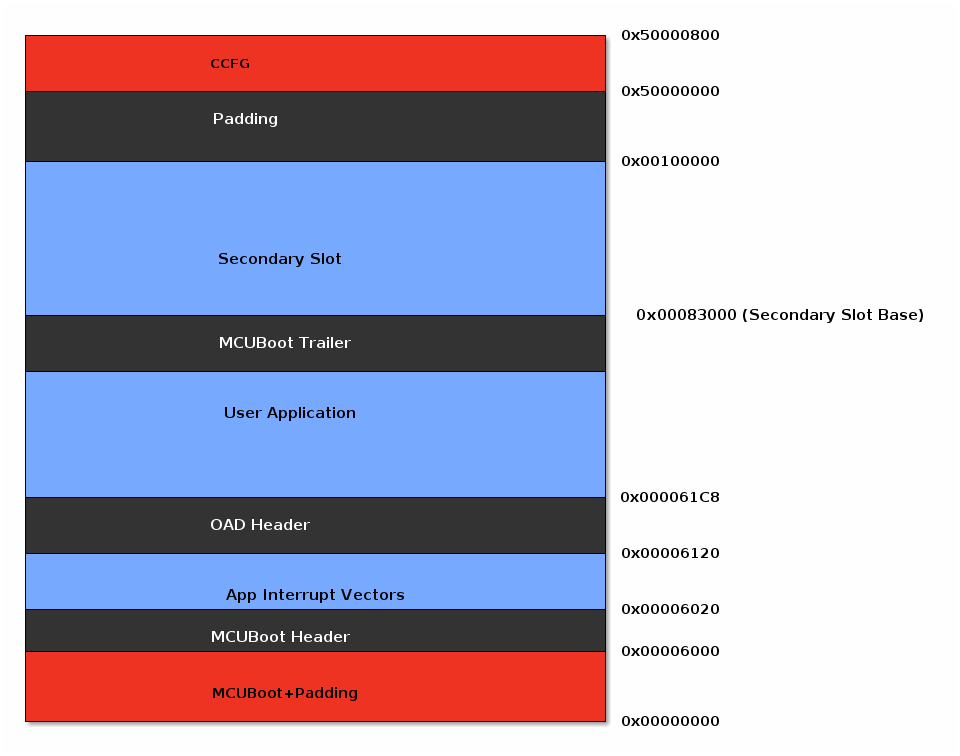

Flash Layout for On-Chip OAD¶
This section will describe the method for placing images in internal flash when using on-chip OAD with the MCUBoot bootloader.
Constraints and Requirements for On-chip OAD¶
In order to perform an On-chip OAD the target system must have:
The user application must be sufficiently small in order to fit into the flash layout system described below
Internal Flash Memory Layout¶
The flash memory layout is dependent on the Device family. CC13x4 and CC26x4 devices differ from CC13x2, CC26x2 devices in their flash memory layout of the bootloader and user applications.
Internal Flash Memory Layout for CC13x2x7 and CC26x2x7¶
The following diagram shows default the flash memory layout for the MCUBoot based Proprietary RF OAD projects on both CC13x2x7 and CC26x2x7 devices.
Internal Flash Memory Layout for CC13x4 and CC26x4¶
The following diagram shows default the flash memory layout for the MCUBoot based Proprietary RF OAD projects on both CC13x4 CC26x4 devices.
